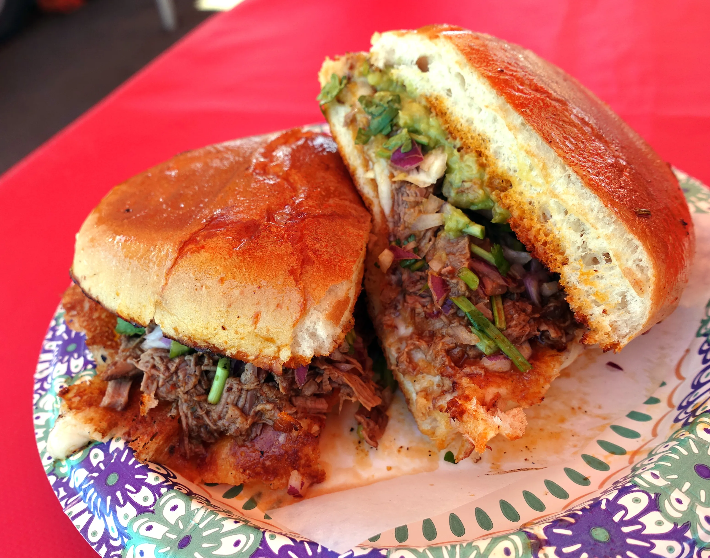

The Mexican Torta
Ingredients
- One pound Sirloin Steak
- One tablespoon garlic salt
- One teaspoon ground black pepper
- One teaspoon ground cumin
- Ground cayenne pepper to taste
- Four kaiser rolls, split
- One-Fourth cup mayonnaise
- One-half cup refried beans
- One large avocado, thinly sliced
- One large tomato, sliced
- Two cups shredded lettuce
- One ounce crumbled cotija cheese
Cooking Instructions
- Preheat an outdoor grill for medium-high heat, and lightly oil the grate.
Season steak with garlic salt, black pepper, cumin, and cayenne pepper.
- Grill steak on the preheated grill until medium-rare, about 5 minutes per side.
Remove from heat to a cuttin board and cover with foil.
- Set a large skillet over medium-high heat. Spread both halves of each roll with mayonnaise.
Brown the rolls, mayonnaise-side down until golden, about 3 minutes. Warm the refried beans in a bowl in the microwave, about 1 minute on
High, and slice the sirloin steak into thin strips.
- Spread a thin layer of beans on the bottom half of each roll, layer with steak, avocado, tomate,
and lettuce. Top with cheese, if desired, and close the sandwich with the top of the roll.